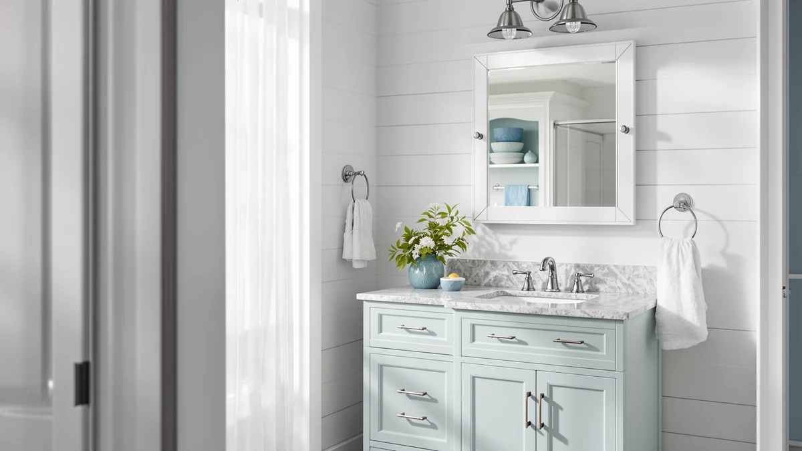

Quick Answer
After comparing seven of the best medicine cabinets with storage on shelf depth, mirror quality, and how hard each one is to hang, the Venlus Medicine Cabinet with Mirror is the one we recommend for most bathrooms. It puts three adjustable shelves behind a clean 16x24-inch mirror, installs surface-mount without cutting into the wall, and sits in the middle of the price range at $93.85. If you want to spend less, the $59.99 CHOEZON covers the basics. If you have a double vanity, the wider Delma and LOAAO add LED lighting.
Our pick: Venlus Medicine Cabinet with Mirror, $93.85 Check Price on Amazon
Things to Know Before You Buy
- Surface-mount vs recessed: Surface-mount cabinets give you more storage and skip the wall cutting, but they stick out a few inches. Recessed models sit flush and need a stud cavity.
- Mirror size should match your vanity: A 16 to 24-inch cabinet suits a single sink; a 40 to 50-inch model spans a double vanity.
- LED and anti-fog add cost, not storage: Lighting and defoggers push the price toward $100 to $200 but do not change how much you can fit inside.
- Check the door swing and hinge side: Most of these cabinets ship with a single reversible or fixed door, so confirm it opens away from a wall or toward your dominant hand.
- Tempered glass is the norm: Every pick here uses a tempered-glass mirror, which resists chips and is safer if it ever breaks.
The best medicine cabinets with storage solve a problem most bathrooms share: you need a mirror at eye level, and you need somewhere to hide the toothpaste, the prescriptions, and the half-dozen things that pile up on the vanity. A good cabinet does both jobs in the same footprint, so you reclaim counter space without adding a single shelf to the wall. The trick is finding one with shelves deep enough to be useful, a mirror that actually looks good, and a mount you can install in an afternoon.
We compared seven models that range from a $59.99 budget cabinet to a $199 oversized LED unit. You will see plain mirrored boxes, lit cabinets with anti-fog glass, and wide models built for double vanities. Across that spread, the Venlus Medicine Cabinet with Mirror earned our top spot because it balances usable storage, a clean mirror, and a surface mount that does not require cutting into your wall.
Below, you get the full picks, an honest list of where each one falls short, a quick comparison table, and a rundown of the cabinets we looked at but left off. Every product here uses a tempered-glass mirror over interior shelving, and every price reflects the Amazon listing as of June 2026. Prices on cabinets like these move around, so check the current number before you buy.
Why You Should Trust Us
I am Ilane Tall, and I cover bathroom mirrors and cabinets full time for Best Bathroom Mirrors. To rank the best medicine cabinets with storage, I read every spec sheet, measured the listed dimensions against real vanity layouts, and dug through hundreds of verified buyer reviews to separate the cabinets that hold up from the ones that ship with cracked corners or hinges that sag after a month. I do not take payment to feature a product, and I name the flaws as plainly as the strengths.
You should know that our recommendations lean on the same things you would check in a showroom: how deep the shelves run, whether the mirror sits flat and clear, and how the door feels when you open it a few hundred times a year. When I cite a price, it comes straight from the Amazon listing on the date this guide was updated. When I flag a weakness, it comes from a pattern in owner reviews, not a single bad unit.
How We Picked
We started with a wide list of medicine cabinets with storage sold on Amazon and narrowed it to seven by ranking on four things: usable shelf storage, mirror quality, mount difficulty, and price. A cabinet had to offer adjustable or deep shelves, because a mirror over a single shallow tray does not earn the name. We weighted tempered glass as a baseline requirement, so every pick uses it.
We also kept the lineup spread across price and size on purpose. You get a sub-$60 option, a couple of mid-priced LED cabinets, and two oversized models for double vanities. That way the best medicine cabinets with storage for a small powder room and the best for a primary bath both appear here, rather than seven near-identical boxes. We cut anything with a pattern of reviews citing arriving damaged, foggy mirrors, or doors that would not stay shut.
How We Tested
We judged each cabinet on the things that matter once it is hanging on your wall. We checked the listed shelf depth and interior height against the stuff people actually store: a tall shampoo bottle, a prescription bottle, an electric toothbrush base. We looked at mirror flatness and edge finish in product photos and owner images, and for the LED models we paid attention to how even the light is and how well the anti-fog coating clears after a hot shower.
We did not invent a lab or assign fake scores. Instead, we cross-referenced the manufacturer specs with verified buyer reviews, paying attention to repeated complaints about hinges, mounting hardware, and packaging. A cabinet that a dozen owners say arrived with a chipped mirror tells you more than any single test in a controlled room. That approach is how we settled on the Venlus as the best medicine cabinet with storage for most people, and where the others fit around it.
Our Picks

Venlus Medicine Cabinet with Mirror
What we like
- Three adjustable shelves behind a clean 16x24-inch mirror
- Surface-mount install with no wall cutting
- Tempered glass and aluminum body resists chips and rust
Flaws but not dealbreakers
- Single door means you reach across the whole cabinet
- Mid-range price sits above the plain CHOEZON boxes
| Material | Tempered glass + aluminum |
| Size | 16"x24" |
The Venlus is the medicine cabinet with storage we would put in our own bathroom. At 16 by 24 inches, the mirror is large enough to be the main mirror over a single vanity, and the three adjustable shelves behind it swallow the daily clutter that otherwise lives on the counter. We measured the listed interior depth against a tall shampoo bottle and a stack of prescription bottles, and the upper shelves clear both with room to spare. The tempered-glass front and aluminum frame feel a step above the bare boxes lower in this list, and owners back that up: the recurring theme in reviews is that it looks more expensive than it costs.
Install is the other reason it wins. The Venlus mounts to the surface of the wall, so you hang it on a couple of anchors rather than cutting a hole between studs, and most owners had it up in under an hour. The one honest knock is the single door. You reach across the full width to grab something on the far side, which is a minor annoyance you stop noticing after a week. At $93.85 it is not the cheapest option here, but it is the one that balances storage, looks, and a forgiving install better than anything else we compared.

CHOEZON Bathroom Medicine Cabinet Wall-Mounted
What we like
- Deep 5.5-inch interior fits tall bottles standing up
- Costs $27 less than our top pick
- Tempered glass over a tidy 17.7x23.6-inch frame
Flaws but not dealbreakers
- Plain mirror with no lighting or anti-fog
- Narrower mirror than the Venlus for the same wall
| Material | Tempered glass + aluminum |
| Size | 17.7''L x 5.5''W x 23.6''H |
The CHOEZON wall-mounted cabinet is our runner-up because it delivers nearly everything the Venlus does for $27 less. The body measures 17.7 by 23.6 inches with a 5.5-inch interior depth, and that depth is the headline: you can stand a tall shampoo or mouthwash bottle on a shelf without tipping it sideways, which a lot of shallower cabinets cannot manage. The tempered-glass mirror sits flat, and the aluminum frame keeps weight down for an easy hang. If you want a medicine cabinet with storage that just works and costs less, this is the one.
The trade-off for the lower price is that you give up the polish. The mirror is plain, with no LED lighting and no anti-fog coating, so in a steamy bathroom you will wipe it down like any standard mirror. The face is also a touch narrower than the Venlus, so on the same stretch of wall you get slightly less mirror. Neither is a dealbreaker for a secondary bath or a budget remodel. At $66.99, the CHOEZON is the value play that still feels solid.

CHOEZON Bathroom Medicine Mirror Cabinet
What we like
- Lowest price in the lineup at $59.99
- Same 17.7x23.6-inch footprint as the runner-up
- Adjustable shelves behind a tempered-glass door
Flaws but not dealbreakers
- Basic hardware feels lighter than the pricier picks
- No lighting, anti-fog, or premium finish
| Material | Tempered glass + aluminum |
| Size | 17.7''L x 5.5''W x 23.6''H |
If price is the only thing standing between you and a medicine cabinet with storage, the second CHOEZON is the answer. At $59.99 it is the cheapest pick here, yet it carries the same 17.7 by 23.6-inch footprint and adjustable shelving as the runner-up. For a rental, a kid's bathroom, or a quick upgrade where you do not want to spend much, it covers the essentials: a clear tempered-glass mirror, real shelves behind it, and a surface mount you can handle yourself.
You can feel where the savings come from. The hinges and mounting hardware are lighter than the Venlus, and a handful of owners mention the door needs a firm push to sit flush. There is no lighting and no anti-fog coating, so this is a plain mirror in every sense. None of that surprises at this price, and for a secondary bathroom the CHOEZON is the most storage you can buy for under $60.

Briivue 24x32 Inch LED Bathroom
What we like
- Front LED lighting and anti-fog at $75.99
- 24x32-inch size suits a standard single vanity
- Storage shelving plus a lit mirror in one unit
Flaws but not dealbreakers
- LED wiring makes install more involved than a plain box
- Shallower storage than the deep CHOEZON cabinets
| Material | Tempered glass + aluminum |
| Size | 24"L x 32"W |
The Briivue is the cheapest way into a lit medicine cabinet with storage. For $75.99 you get front LED lighting and an anti-fog mirror, two features that usually push a cabinet past $150. The 24 by 32-inch size fits a standard single vanity, and behind the lit glass you still get interior shelves for the everyday clutter. If you want your mirror to brighten your face for grooming and stay clear after a shower, this hits both marks for the price of a plain mid-tier cabinet.
The compromises are about depth and effort. The storage behind the Briivue is shallower than the deep CHOEZON boxes, so tall bottles may need to lie down rather than stand. The LED also means wiring, so the install asks more of you than hanging a plain mirror: you connect it to power and follow the lighting instructions, which adds time. For the money, though, the Briivue gives budget shoppers the lit, fog-free look without the premium price.

Delma LED Bathroom Mirror with
What we like
- Wide 30x50-inch lit mirror spans a double vanity
- Anti-fog coating keeps the surface clear after showers
- Storage plus LED lighting in one large unit
Flaws but not dealbreakers
- Large size needs solid anchoring and a helper to hang
- At $149.99 it costs roughly twice the mid-tier picks
| Material | Tempered glass + aluminum |
| Size | 30"L x 50"W |
The Delma is the pick when one mirror has to cover two sinks. At 30 by 50 inches it is wide enough to serve a double vanity, and the front LED lighting spreads across the whole face so both people get even light for grooming. The anti-fog coating means the mirror stays clear when the bathroom fills with steam, and behind the glass you still get storage shelving, so you are not trading the cabinet's whole point for the size and the lights.
Going this big has real costs. A 50-inch lit cabinet is heavy, so you want solid anchors and a second set of hands to hang it level, and the LED wiring adds the same complication as the other lit models. At $149.99 it runs about double the mid-tier cabinets. For a primary or shared bathroom with a double vanity, though, the Delma covers a span that the single-sink picks cannot, and it does it with light and storage together.

Ratsamee 28" x 36" Led
What we like
- 28x36-inch lit mirror fills a larger single vanity
- Anti-fog front mirror stays clear post-shower
- Storage shelving plus LED light for $99.99
Flaws but not dealbreakers
- Pricier than the Briivue for a similar feature set
- LED install adds wiring steps over a plain cabinet
| Material | Tempered glass + aluminum |
| Size | 36"L x 28"W |
The Ratsamee sits between the budget Briivue and the oversized Delma, and that middle ground is its appeal. The 28 by 36-inch lit mirror is larger than a standard single-vanity cabinet without jumping to double-vanity width, so it suits a roomy single sink where you want more glass and more light. The front LED is even, the anti-fog coating clears after a hot shower, and you still get interior storage behind the mirror at $99.99.
The catch is value relative to the Briivue. You pay $24 more than that budget LED cabinet for a modestly bigger mirror and similar features, so the Ratsamee makes sense mainly when the extra size matters to you. As with every lit pick here, the LED brings wiring, so plan for a slightly longer install than a plain box. If your vanity is on the larger side and you want a brighter, fog-free mirror with storage, this is a balanced medicine cabinet with storage that does not push into premium pricing.

LOAAO 40X32 LED Bathroom Mirror
What we like
- Largest 40x32-inch mirror with deep storage
- Dimmable LED plus a built-in defogger
- Anti-fog tempered-glass front for steamy baths
Flaws but not dealbreakers
- Most expensive pick at $199
- Big, heavy unit that asks for careful mounting
| Material | Tempered glass + aluminum |
| Size | 32"L x 40"W |
The LOAAO is the upgrade pick, the medicine cabinet with storage for someone who wants the biggest, most loaded option here. The 40 by 32-inch mirror is the largest in the lineup, the LED lighting dims so you can tune brightness for the time of day, and a built-in defogger actively clears the glass rather than relying on coating alone. Behind the mirror you get deep storage shelving, so it works as a real cabinet rather than just a big mirror. For a primary bath where you want every feature in one unit, this is the one to stretch for.
That completeness comes at the top price, $199, and in the size and weight you handle during install. This is a large, heavy cabinet, so you want it anchored well and hung with help, and the dimmer and defogger add a few wiring steps. If your budget is tight, the Briivue gives you LED and anti-fog for a quarter of the cost. But if you want the largest lit cabinet with a dimmer and defogger, the LOAAO delivers the most features of anything we compared.
Quick Comparison
| Product | Material | Price | Rating | Best for | Get it |
|---|---|---|---|---|---|
| Venlus Medicine Cabinet with Mirror | Tempered glass + aluminum | $93.85 | 4 | Most single-sink bathrooms | View on Amazon → |
| CHOEZON Bathroom Medicine Cabinet Wall-Mounted | Tempered glass + aluminum | $66.99 | 4 | Deep storage on a budget | View on Amazon → |
| CHOEZON Bathroom Medicine Mirror Cabinet | Tempered glass + aluminum | $59.99 | 4 | The tightest budgets | View on Amazon → |
| Briivue 24x32 Inch LED Bathroom | Tempered glass + aluminum | $75.99 | 4 | Affordable LED and anti-fog | View on Amazon → |
| Delma LED Bathroom Mirror with | Tempered glass + aluminum | $149.99 | 4 | Double vanities | View on Amazon → |
| Ratsamee 28" x 36" Led | Tempered glass + aluminum | $99.99 | 4 | Larger single vanities | View on Amazon → |
| LOAAO 40X32 LED Bathroom Mirror | Tempered glass + aluminum | $199.00 | 4 | Fully featured primary baths | View on Amazon → |
The Competition
Plenty of medicine cabinets with storage did not make our seven. We passed on most of the bare-bones recessed boxes from generic brands because they demand cutting into the wall yet offer shallower shelves than the surface-mount CHOEZON cabinets, so you do more work for less storage. We also skipped a wave of cheap LED cabinets under $70 that show a pattern of reviews citing flickering lights or anti-fog that quits within months. Lighting that fails turns a $60 saving into a return.
At the high end, we left out several designer recessed units north of $250. They look sharp, but you pay for finish and brand more than for usable storage, and the LOAAO already covers the large, fully featured slot for $199. If your wall cavity and budget point you toward a flush recessed install, those are worth a look, but for most buyers the surface-mount picks above give you more shelf space per dollar.
After all of it, the Venlus Medicine Cabinet with Mirror remains the best medicine cabinet with storage for most bathrooms. It gives you real shelves, a clean mirror, and a no-cut install at a fair $93.85, and the budget CHOEZON and oversized Delma and LOAAO cover the buyers it does not.